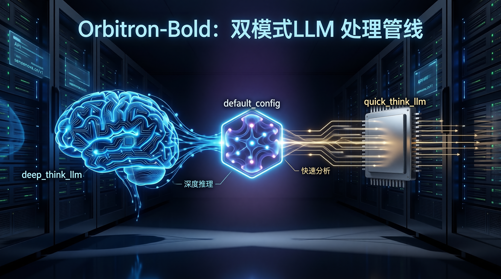
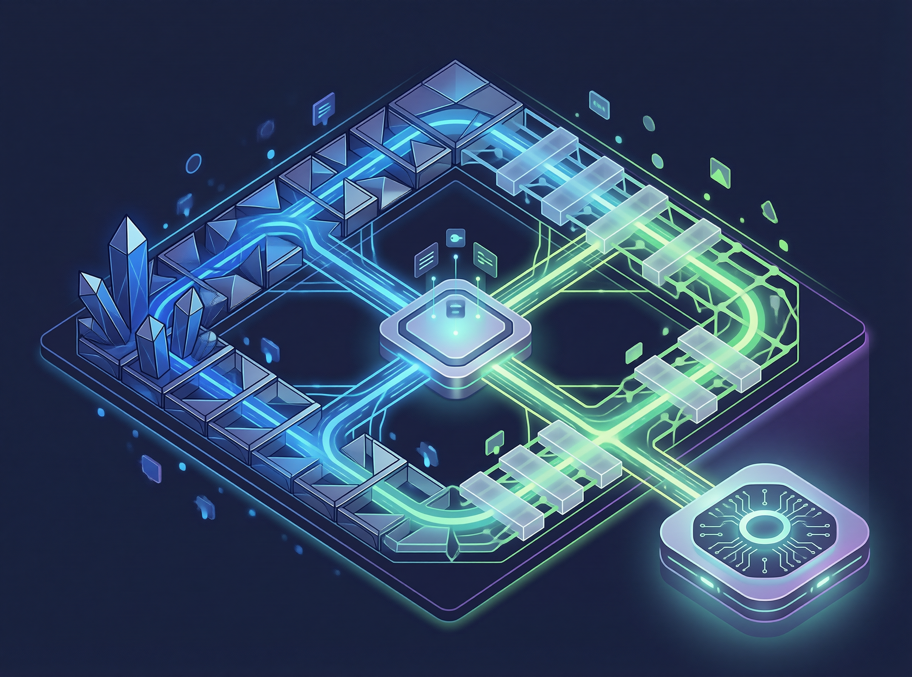
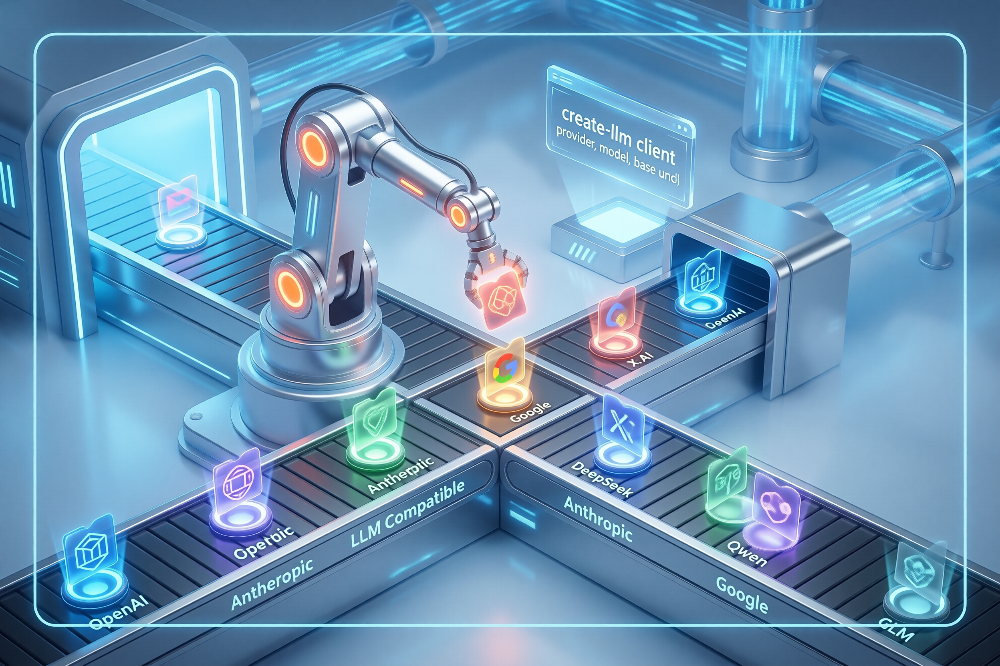
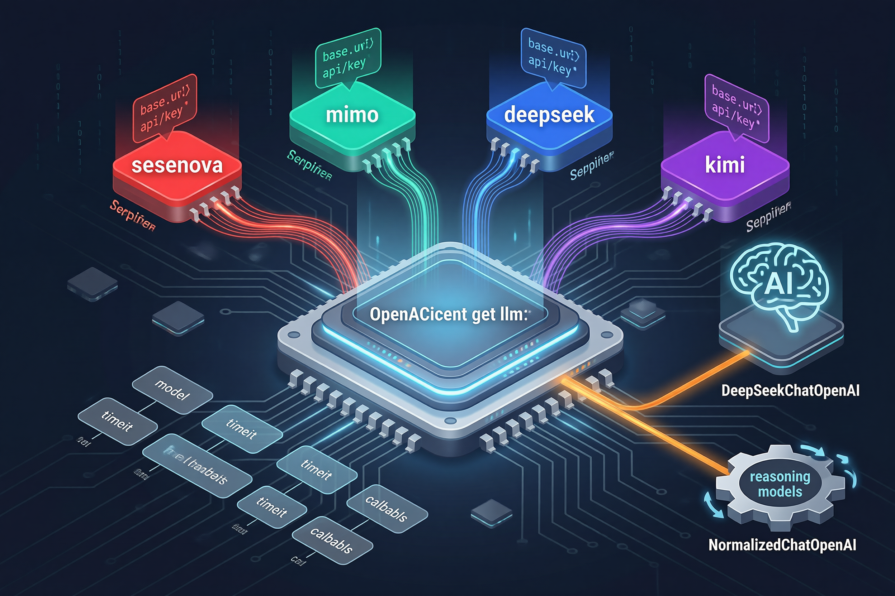
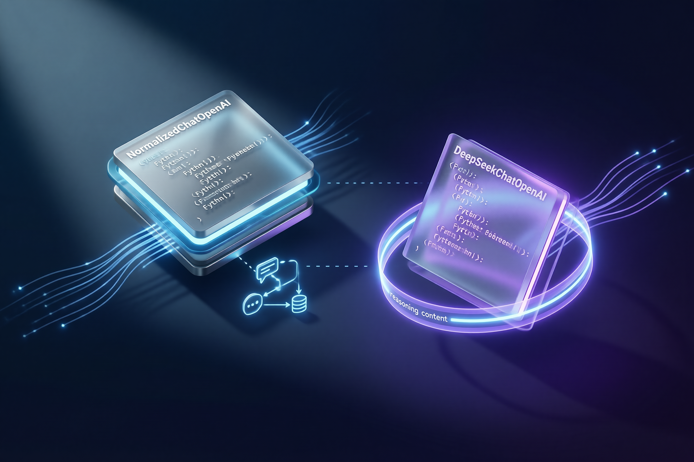
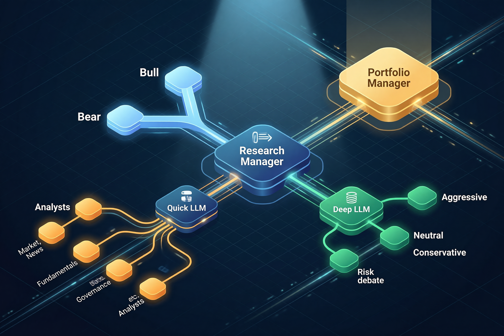
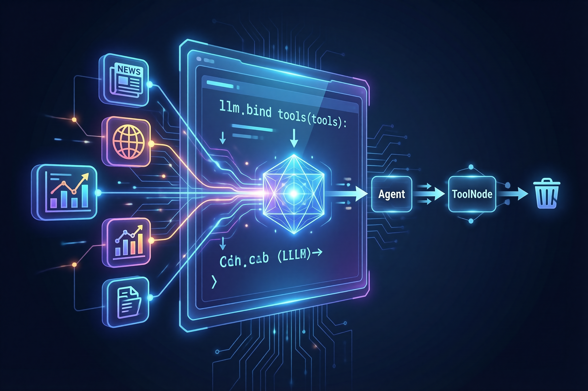
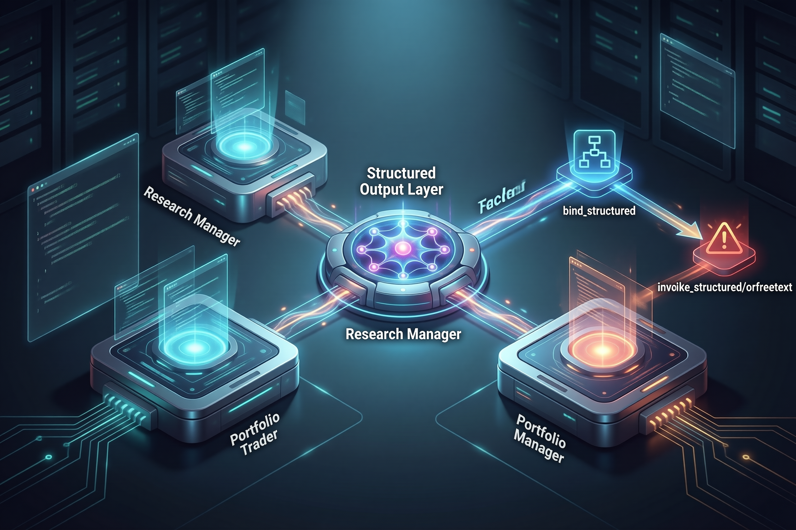
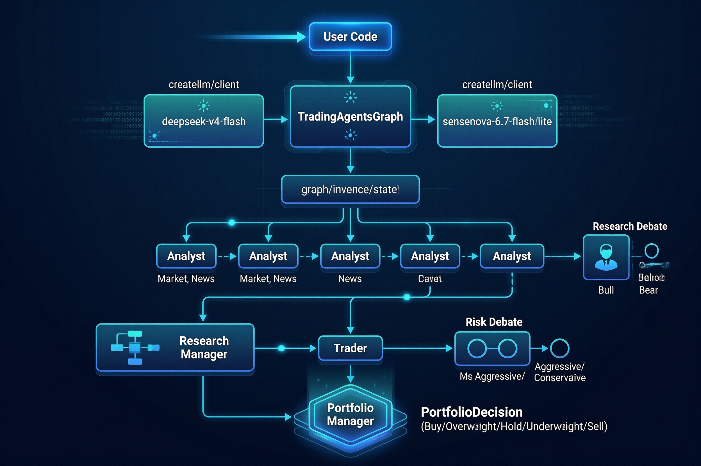
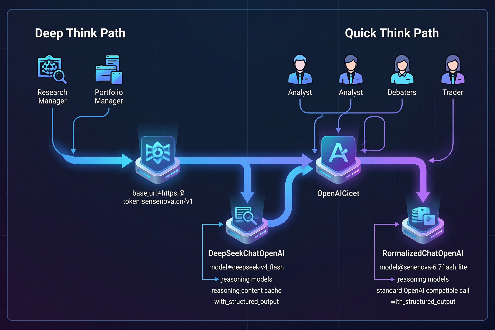

TradingAgents LLM 调用管道详解#
本文档描述 TradingAgents 框架中从配置到实际推理的完整 LLM 调用链路。
1. 配置层：default_config.py#
所有 LLM 参数的源头：
DEFAULT_CONFIG = {
"llm_provider": "sensenova", # 统一供应商
"deep_think_llm": "deepseek-v4-flash", # 串行决策模型（思考模式）
"quick_think_llm": "sensenova-6.7-flash-lite", # 并行分析模型（无思考）
"backend_url": "https://token.sensenova.cn/v1", # API 端点
# 供应商专属参数
"google_thinking_level": None,
"openai_reasoning_effort": None,
"anthropic_effort": None,
}
关键设计：同一个 llm_provider 下使用两个不同的模型，分别承担不同的认知负载。
2. 入口层：TradingAgentsGraph.__init__()#
tradingagents/graph/trading_graph.py:56
# 1. 提取供应商专属参数（thinking_level / reasoning_effort 等）
llm_kwargs = self._get_provider_kwargs()
# 2. 同一个 provider，创建两个客户端（模型不同）
deep_client = create_llm_client(
provider=self.config["llm_provider"], # "sensenova"
model=self.config["deep_think_llm"], # "deepseek-v4-flash"
base_url=self.config.get("backend_url"), # "https://token.sensenova.cn/v1"
**llm_kwargs,
)
quick_client = create_llm_client(
provider=self.config["llm_provider"], # "sensenova"
model=self.config["quick_think_llm"], # "sensenova-6.7-flash-lite"
base_url=self.config.get("backend_url"),
**llm_kwargs,
)
# 3. 获取实际可用的 LangChain LLM 实例
self.deep_thinking_llm = deep_client.get_llm()
self.quick_thinking_llm = quick_client.get_llm()
3. 工厂层：create_llm_client()#
tradingagents/llm_clients/factory.py:12
_OPENAI_COMPATIBLE = (
"openai", "xai", "deepseek", "qwen", "glm", "ollama", "openrouter",
"sensenova", "mimo", "kimi",
)
def create_llm_client(provider, model, base_url, **kwargs):
if provider in _OPENAI_COMPATIBLE:
from .openai_client import OpenAIClient
return OpenAIClient(model, base_url, provider=provider, **kwargs)
elif provider == "anthropic":
return AnthropicClient(...)
elif provider == "google":
return GoogleClient(...)
# ...
设计意图：工厂层只负责路由到正确的客户端类，不做任何模型参数的具体组装。

4. 客户端层：OpenAIClient.get_llm()#
tradingagents/llm_clients/openai_client.py:157
这是整个管道的核心决策点。get_llm() 方法按以下顺序组装参数：
4.1 基础参数#
llm_kwargs = {"model": self.model}
4.2 供应商路由（URL + API Key）#
_PROVIDER_CONFIG = {
"sensenova": ("https://token.sensenova.cn/v1", "SENSENOVA_API_KEY"),
"mimo": ("https://token-plan-cn.xiaomimimo.com/v1", "MIMO_API_KEY"),
"deepseek": ("https://api.deepseek.com", "DEEPSEEK_API_KEY"),
"kimi": ("https://api.kimi.com/coding/v1", "KIMI_API_KEY"),
# ...
}
- 从环境变量读取 API Key
base_url优先级：用户显式传入 > 供应商默认值
4.3 透传用户参数#
_PASSTHROUGH_KWARGS = (
"timeout", "max_retries", "reasoning_effort",
"api_key", "callbacks", "http_client", ...
)
4.4 原生 OpenAI 特殊处理#
if self.provider == "openai":
llm_kwargs["use_responses_api"] = True # 使用 /v1/responses
4.5 最关键：ChatOpenAI 子类选择#
_reasoning_models: set[str] = {
"deepseek-v4-flash", "deepseek-reasoner", "deepseek-r1",
"mimo-v2.5", "mimo-v2.5-pro",
}
use_reasoning_cls = (
self.provider in ("deepseek", "mimo")
or (self.provider == "sensenova" and self.model.lower() in _reasoning_models)
)
chat_cls = DeepSeekChatOpenAI if use_reasoning_cls else NormalizedChatOpenAI
return chat_cls(**llm_kwargs)
| 供应商 | 模型 | 使用的客户端类 | 原因 |
|---|---|---|---|
sensenova |
deepseek-v4-flash |
DeepSeekChatOpenAI |
返回 reasoning_content |
sensenova |
sensenova-6.7-flash-lite |
NormalizedChatOpenAI |
不返回 reasoning |
deepseek |
任意 | DeepSeekChatOpenAI |
全部可能返回 reasoning |
mimo |
v2.5/v2.5-pro |
DeepSeekChatOpenAI |
支持 thinking |
openai |
任意 | NormalizedChatOpenAI |
Responses API 标准化 |
| 其他 | 任意 | NormalizedChatOpenAI |
标准兼容 |

5. 两个 ChatOpenAI 子类的差异#
NormalizedChatOpenAI（基类）#
tradingagents/llm_clients/openai_client.py:11
class NormalizedChatOpenAI(ChatOpenAI):
def invoke(self, input, config=None, **kwargs):
# 将 Responses API 的 list[dict] content 标准化为字符串
return normalize_content(super().invoke(input, config, **kwargs))
def with_structured_output(self, schema, *, method=None, **kwargs):
# 强制使用 function_calling 而非 parse 路径
# 避免 PydanticSerializationUnexpectedValue 警告
if method is None:
method = "function_calling"
return super().with_structured_output(schema, method=method, **kwargs)
DeepSeekChatOpenAI（推理专用）#
tradingagents/llm_clients/openai_client.py:52
处理 DeepSeek 系列模型的两个特殊问题：
问题 1：Thinking-Mode 往返#
DeepSeek 的推理模型返回的响应中包含 reasoning_content 字段，下一轮请求必须原样回传，否则 API 返回 400。
但 LangChain 的 ChatPromptTemplate 会重新创建消息对象，导致 additional_kwargs（包含 reasoning_content）被丢弃。
解决方案：Sidecar Cache
_reasoning_cache: dict[str, str] = {} # 类变量，跨实例共享
def _get_request_payload(self, input_, ..., **kwargs):
# 发送时：按 message.id 从缓存中恢复 reasoning_content
msg_id = getattr(message, "id", None)
if msg_id and msg_id in self._reasoning_cache:
message_dict["reasoning_content"] = self._reasoning_cache[msg_id]
def _create_chat_result(self, response, ...):
# 接收时：将 reasoning_content 存入缓存
cache[msg_id] = reasoning
问题 2：deepseek-reasoner 不支持 tool_choice#
def with_structured_output(self, schema, *, method=None, **kwargs):
if self.model_name.lower() in ("deepseek-reasoner", "deepseek-r1"):
raise NotImplementedError("deepseek-reasoner does not support tool_choice")
return super().with_structured_output(schema, ...)

6. Graph 层：双模型分工#
tradingagents/graph/setup.py:13
class GraphSetup:
def __init__(self, quick_thinking_llm, deep_thinking_llm, ...):
self.quick_thinking_llm = quick_thinking_llm # 轻量模型
self.deep_thinking_llm = deep_thinking_llm # 推理模型
def setup_graph(self, selected_analysts):
# Phase 1: Analysts（并行，Tool Loop）
# 每个 Analyst 都有独立 tools + Msg Clear
market_analyst = create_market_analyst(self.quick_thinking_llm)
news_analyst = create_news_analyst(self.quick_thinking_llm)
fundamentals_analyst = create_fundamentals_analyst(self.quick_thinking_llm)
governance_analyst = create_governance_analyst(self.quick_thinking_llm)
# ... 共 6 个 analyst，全部用 quick_thinking_llm
# Phase 2: Research Debate（并行辩论）
bull = create_bull_researcher(self.quick_thinking_llm)
bear = create_bear_researcher(self.quick_thinking_llm)
# Phase 3: Research Manager（结构化决策）
research_manager = create_research_manager(self.deep_thinking_llm)
# Phase 4: Trader（结构化决策）
trader = create_trader(self.quick_thinking_llm)
# Phase 5: Risk Debate（并行辩论）
aggressive = create_aggressive_debator(self.quick_thinking_llm)
neutral = create_neutral_debator(self.quick_thinking_llm)
conservative = create_conservative_debator(self.quick_thinking_llm)
# Phase 6: Portfolio Manager（最终决策）
portfolio_manager = create_portfolio_manager(self.deep_thinking_llm)
分工策略：
| 角色 | 模型 | 原因 |
|---|---|---|
| 6 个 Analyst（并行） | quick_thinking_llm |
工具调用密集、可并行、不需要深度推理 |
| Bull/Bear Debater | quick_thinking_llm |
辩论是并行生成观点，非最终决策 |
| Research Manager | deep_thinking_llm |
需要综合多份报告，输出结构化 ResearchPlan |
| Trader | quick_thinking_llm |
基于 Research Plan 生成交易提案 |
| Risk Debater（3个） | quick_thinking_llm |
并行风险评估 |
| Portfolio Manager | deep_thinking_llm |
最终决策，输出结构化 PortfolioDecision |

7. Agent 层：llm.bind_tools()#
以 create_news_analyst() 为例：
def create_news_analyst(llm):
def news_analyst_node(state):
tools = [get_news, get_global_news, get_macro_indicators, get_research_reports]
system_message = "You are a news researcher..."
prompt = ChatPromptTemplate.from_messages([...])
chain = prompt | llm.bind_tools(tools) # 绑定工具
result = chain.invoke(state["messages"]) # LLM 调用
return {"messages": [result], "news_report": report}
return news_analyst_node
每个 Analyst 节点的工作流：
llm.bind_tools(tools)— LLM 获得工具调用能力chain.invoke()— LLM 根据 prompt 决定是调用工具还是直接生成报告- 如果生成
tool_calls，LangGraph 路由到ToolNode执行工具 - 工具结果返回后，LLM 再次调用，生成最终报告
Msg Clear节点清空消息历史（控制上下文长度）

8. 结构化输出层：structured.py#
tradingagents/agents/utils/structured.py
用于 Research Manager、Trader、Portfolio Manager 这三个需要输出结构化数据的节点：
def bind_structured(llm, schema, agent_name):
"""包装 llm.with_structured_output(schema)，失败返回 None"""
try:
return llm.with_structured_output(schema)
except NotImplementedError:
# deepseek-reasoner 走到这里 -> 返回 None
return None
def invoke_structured_or_freetext(structured_llm, plain_llm, prompt, render, agent_name):
"""先尝试结构化输出，失败则回退到自由文本"""
if structured_llm is not None:
try:
result = structured_llm.invoke(prompt)
return render(result) # Pydantic 对象 -> Markdown
except Exception:
pass # 任何错误都回退
response = plain_llm.invoke(prompt)
return response.content # 自由文本
回退路径：
bind_structured() 返回 None
|
invoke_structured_or_freetext() 跳过结构化调用
|
直接调用 plain_llm.invoke() -> 返回自由文本

9. 完整调用时序图#
用户代码
|
v
TradingAgentsGraph()
|-- create_llm_client("sensenova", "deepseek-v4-flash") --.
| └── OpenAIClient.get_llm() |
| └── DeepSeekChatOpenAI(...) <- reasoning 模型 |
└── create_llm_client("sensenova", "sensenova-6.7-flash-lite")
└── OpenAIClient.get_llm()
└── NormalizedChatOpenAI(...) <- 普通模型
|
v
graph.invoke(state)
|
|-- Parallel Analysts (quick LLM + bind_tools)
| |-- Market Analyst -> get_stock_data -> get_indicators -> report
| |-- News Analyst -> get_news -> get_research_reports -> report
| └── ...
|
|-- Research Debate (quick LLM)
| |-- Bull Researcher -> opinion
| └── Bear Researcher -> opinion
|
|-- Research Manager (deep LLM + structured output)
| └── ResearchPlan(rating, rationale, actions)
|
|-- Trader (quick LLM + structured output)
| └── TraderProposal(action, entry, stop, sizing)
|
|-- Risk Debate (quick LLM)
| |-- Aggressive / Neutral / Conservative -> opinions
|
└── Portfolio Manager (deep LLM + structured output)
└── PortfolioDecision(Buy/Overweight/Hold/Underweight/Sell)

10. 当前配置下的实际路径#
以当前配置为例：
| 参数 | 值 |
|---|---|
llm_provider |
sensenova |
deep_think_llm |
deepseek-v4-flash |
quick_think_llm |
sensenova-6.7-flash-lite |
backend_url |
https://token.sensenova.cn/v1 |
实际运行时：
Deep Think 路径（Research Manager + Portfolio Manager）：
OpenAIClient->base_url="https://token.sensenova.cn/v1"model="deepseek-v4-flash"在_reasoning_models集合中- -> 使用
DeepSeekChatOpenAI子类 - -> 支持
reasoning_content缓存 - -> 支持
with_structured_output（非deepseek-reasoner）
Quick Think 路径（6 个 Analyst + 3 个 Debater + Trader）：
OpenAIClient->base_url="https://token.sensenova.cn/v1"model="sensenova-6.7-flash-lite"不在_reasoning_models中- -> 使用
NormalizedChatOpenAI子类 - -> 标准 OpenAI 兼容调用，无 reasoning 特殊处理
- -> 支持
with_structured_output
